Jesus at the Center
We believe Jesus Christ is our Savior, our example, and the source of lasting hope. We want people to know Him personally.
A church family learning to love like Jesus, grow through His Word, and share hope with our community in Port St. Lucie.
Sabbath School 9:45 AM · Worship 11:00 AM
295 NW Prima Vista Blvd, Port Saint Lucie, FL 34983-1964
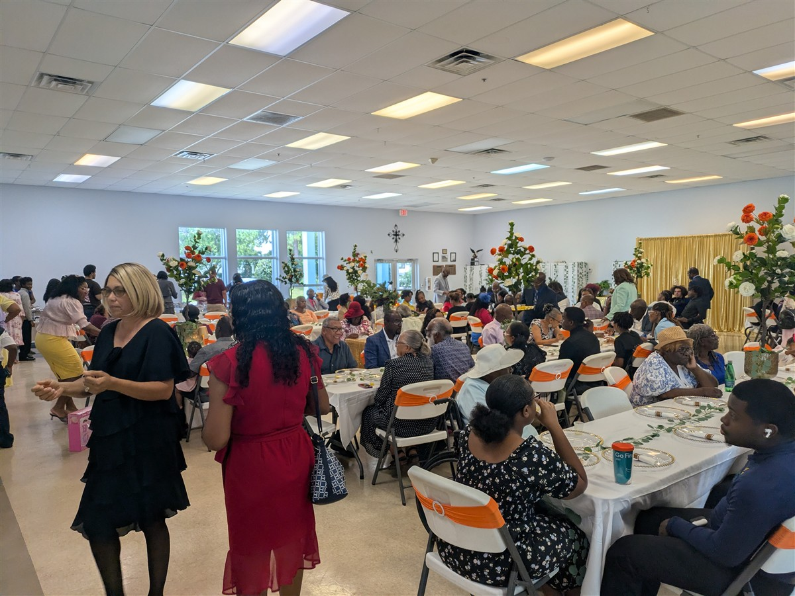
Victory Seventh-day Adventist Church is a community seeking to follow Jesus, understand the Bible, care for one another, and bring practical hope to the people around us.
Whether you have followed Jesus for years or are just beginning to explore faith, we want to help you take your next step.
“Welcome to Victory! Whether you are joining us for the first time or have been part of our family for years, I am so glad you are here. At Victory, we believe that in Christ there is hope for every heart and healing for every life. Come as you are, worship with us, open the Scriptures with us, and discover the victory that Jesus offers. We would love to welcome you this Sabbath. Every new life begins with Victory.”
Pastor Dwight Gayle
Victory Seventh-day Adventist Church
Our faith shapes how we worship, how we treat people, and how we serve. These commitments guide the life and mission of Victory.
We believe Jesus Christ is our Savior, our example, and the source of lasting hope. We want people to know Him personally.
We study Scripture to understand God's character, grow in wisdom, and put faith into practice in everyday life.
We treasure the seventh-day Sabbath as a gift from God—a weekly time for worship, rest, relationships, and renewal.
Growing together in faith. Serving our neighbors with compassion. Sharing the good news of Jesus.
Church is more than attending a service. It's growing in faith, building relationships, and discovering how God can use your gifts.
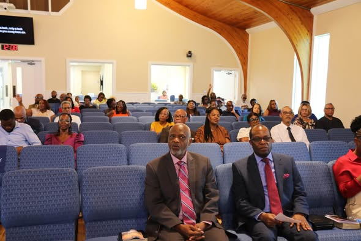
Help children discover God's love and support families as they grow together in faith.
Ask about family ministries →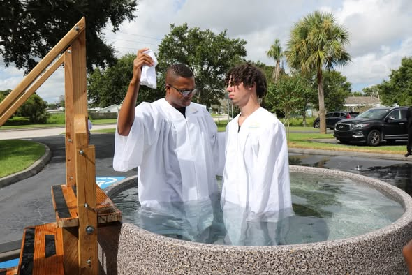
A place to ask real questions, build friendships, serve, and make faith your own.
Get connected →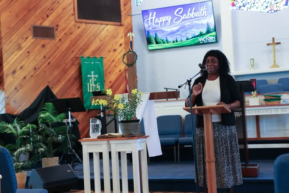
Build a deeper relationship with God through Scripture, prayer, and shared encouragement.
Share a prayer request →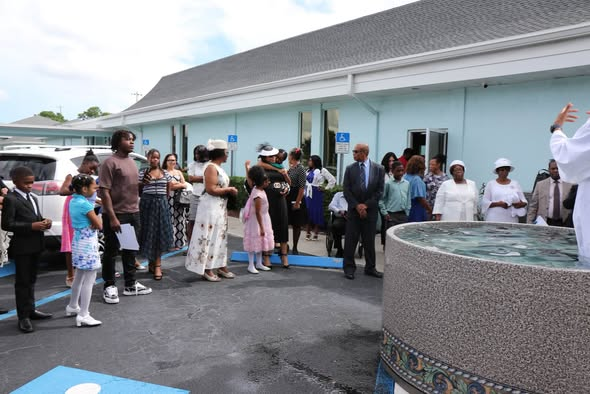
Put compassion into action and help meet practical needs in our local community.
Explore serving →Use music, creativity, hospitality, and your gifts to help create meaningful worship.
Volunteer with us →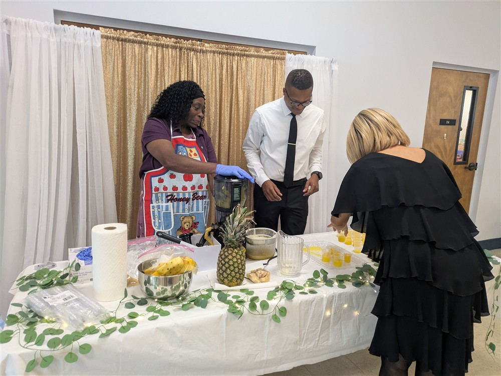
Encourage practical habits and supportive relationships that help people flourish.
Learn more →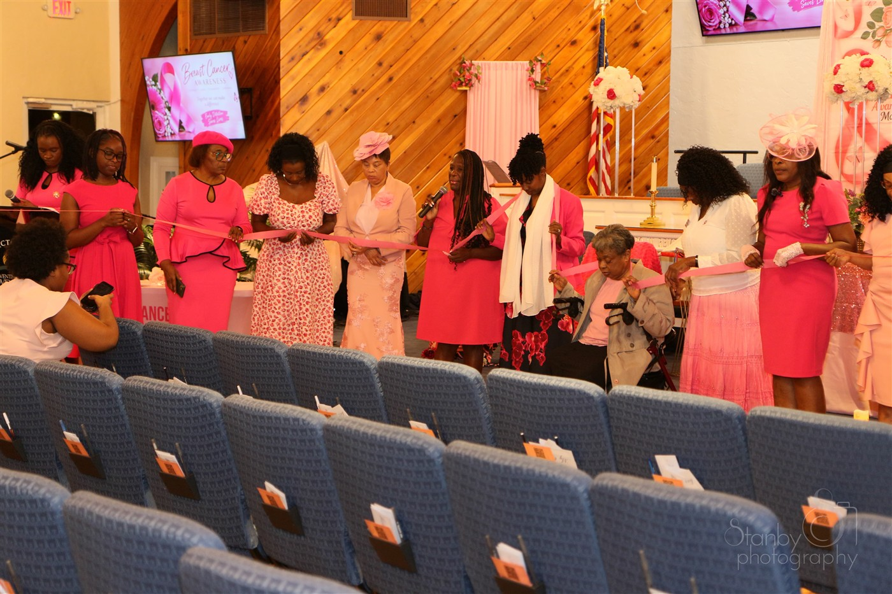
Victory's Women's Ministries encourages women of every age to grow in Christ, support one another through every season of life, and serve our community with compassion.
A service of hope, prayer, and remembrance that honors survivors, supports families, and reminds us that early detection saves lives.
A day of inspiring speakers, worship, and fellowship that equips women for faith, family, health, and leadership.
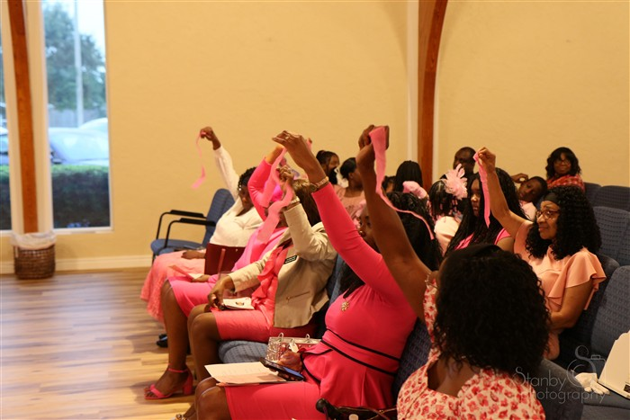
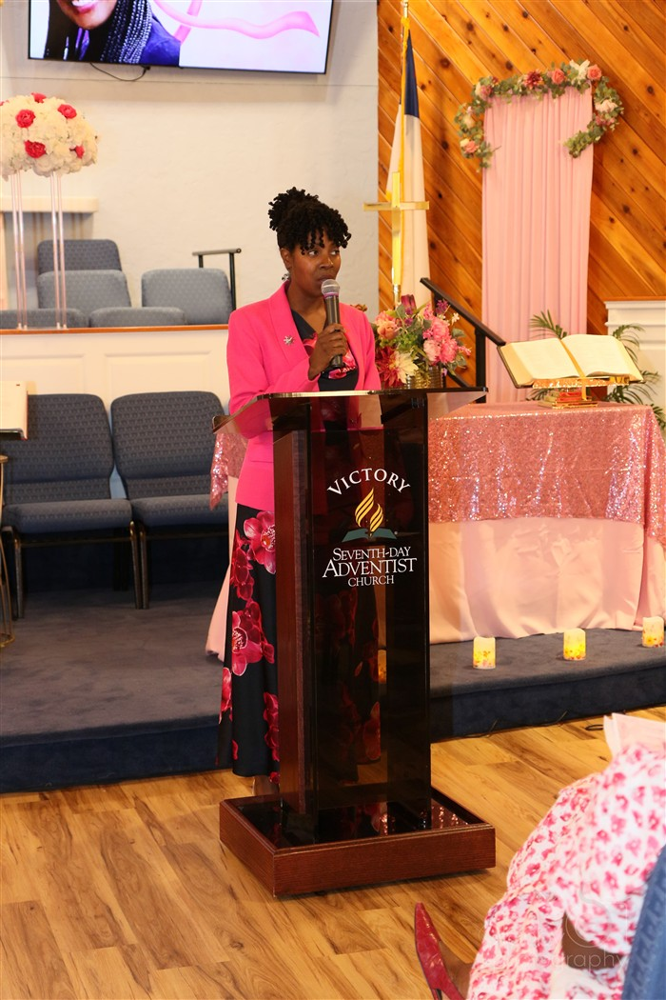
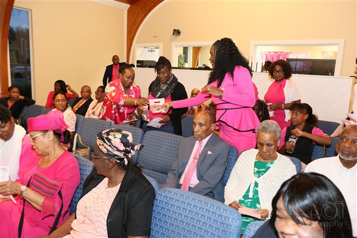
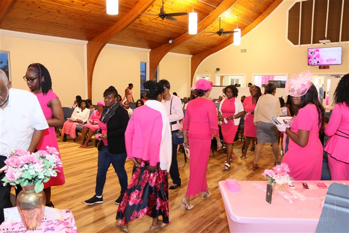
Photos: Stanby Photography
Ministry descriptions are a proposed starting point. Confirm which ministries are currently active and who should receive inquiries before launch.
Join us each week for worship, Bible study, fellowship, and youth ministry. We would be glad to welcome you in person or online.
See Church Updates on Facebook ↗Official calendar and registration links will be added once the church schedule is confirmed.
Sabbath School: 9:45 AM
Divine Worship: 11:00 AM
Bible Class: 3:30 PM
AYM: 4:30 PM
Every Sabbath · Grow deeper in the Word together.
Every Sabbath · Youth fellowship and spiritual growth.
Every Wednesday · Come pray, praise, and be renewed midweek.
Join the Victory livestream every Sabbath for Divine Worship at 11:00 AM, or catch up on past services on our YouTube channel.
Whatever you are facing, we believe prayer matters. If you would like our prayer team or a pastor to pray with you, you can share a request here.
You may share only what you are comfortable sharing. Please do not include highly sensitive personal, financial, or medical information in this form.
Need a conversation? Use the contact form to ask the church to get in touch with you.
Visiting a church for the first time can bring questions. We want you to feel comfortable, know what to expect, and have an opportunity to meet the Victory family.
A warm welcome, Bible-centered worship, prayer, music, and time to grow together in faith.
Come in what feels comfortable and respectful to you. We want you to feel at ease.
You do not need to know everything or believe everything already. Bring your questions—we are glad you are here.
Share a little information and tell us what would make your visit easier. Your information will be emailed to the church inbox. Please share only the information needed to help us welcome you.
Have a question, want to learn more about Victory, or interested in serving? Choose the next step that feels right for you.
Ask about opportunities to study the Bible with someone from the church.
Request information →Tell us about your interests and discover ways to support the church and community.
Find a place to serve →Support the mission and ministry of Victory through the church’s official Adventist Giving page.
Give securely online ↗Ready for a meaningful next step? Send a request and someone from the church will contact you to plan the details.
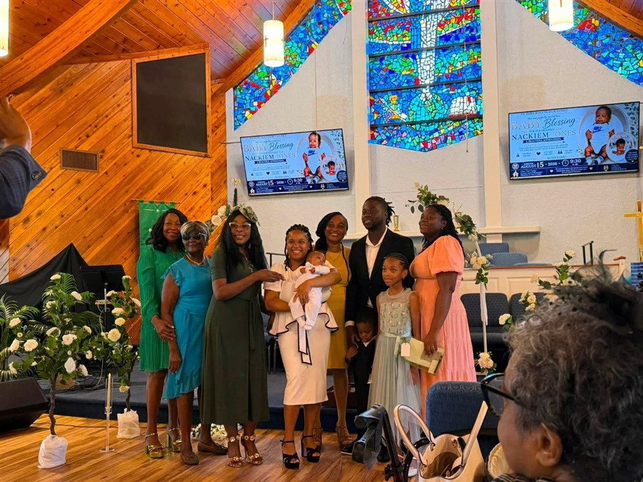
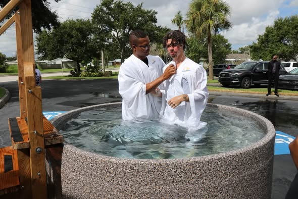
Requests are emailed to the church inbox. Please avoid including sensitive personal, financial, or medical information.
Have another question? Use the contact form below and we will help you find an answer.
Send a question, ask about a ministry, or let us know how we can help you connect.
Meeting address:
295 NW Prima Vista Blvd
Port Saint Lucie, FL 34983-1964
Sabbath schedule:
Sabbath School 9:45 AM
Divine Worship 11:00 AM
Bible Class 3:30 PM · AYM 4:30 PM
victorysdachurchpsl@gmail.com ↗
Visit our Facebook page ↗